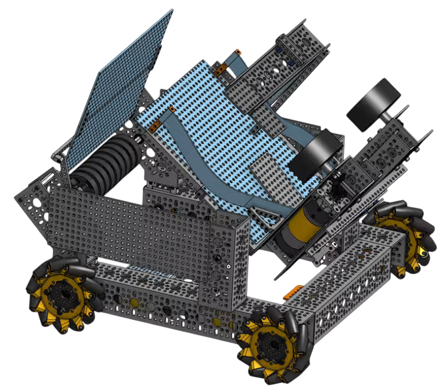
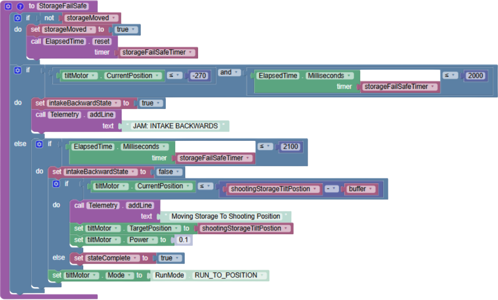

Our Into the Deep Robot
Into the Deep, challenged teams to build robots capable of complex autonomous and driver-controlled tasks
— and we rose to that challenge with dedication and creativity.
Our robot is a fast, dynamic, and maneuverable bot designed
for the Into the Deep challenge. Engineered with precision
and tested through countless iterations, it reflects the hard work
of our entire team.

Our code was built using block coding and software developed by our hard-working software team. With multiple iterations and testing, we achieved successful autonomous and strong tele-op, usable for different positions on the field.
